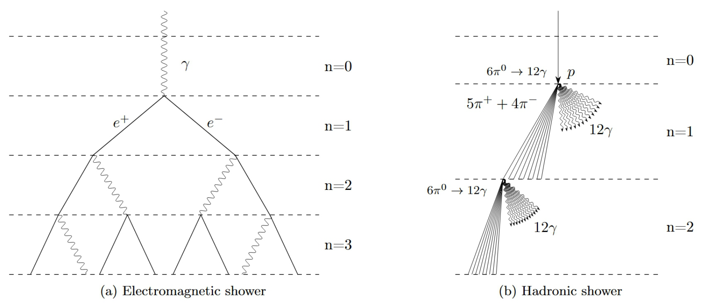
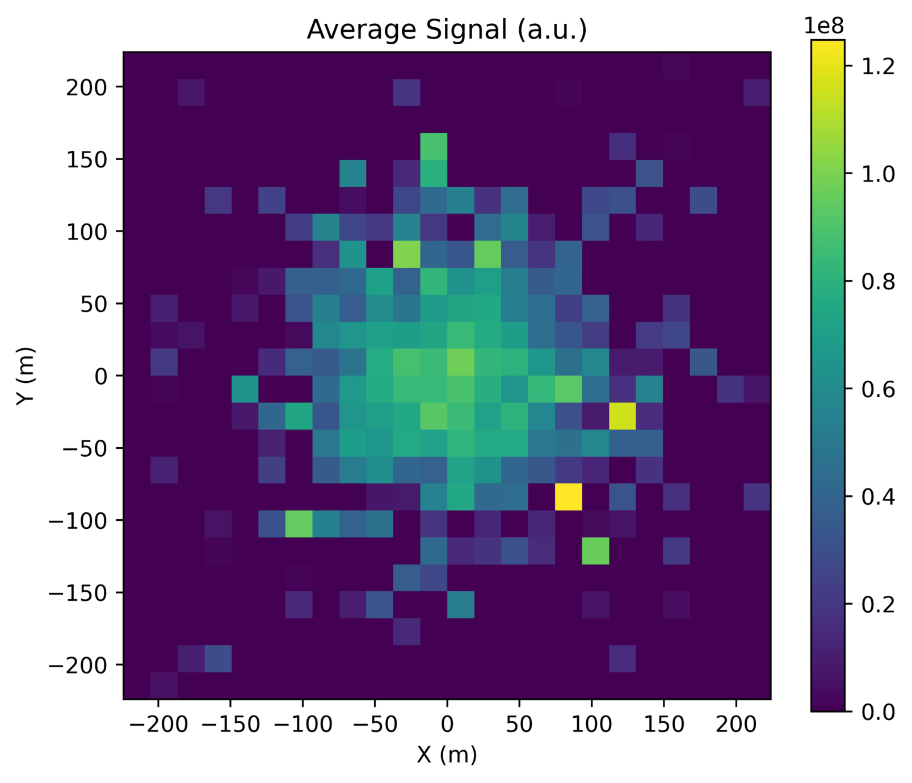

물질을 통과할 때 하전 입자는 물질의 원자·분자와 상호작용하여 그 결과 운동 에너지를 잃는다. 에너지 손실에는 물질의 이온화, 제동복사(bremsstrahlung), 전자-양전자 쌍 생성 등 다양한 메커니즘이 있다. 각 메커니즘으로 잃는 에너지의 비율은 입자와 그 운동의 매개변수—운동 에너지, 입자 질량, 전하—에 의존한다. 이 문제에서는 주된 에너지 손실 메커니즘이 제동복사인 초상대론적($\beta \simeq 1$, $E_{\rm kin} \gg m_e c^2$) 전자(및 양전자—양으로 하전된 전자)를 다룬다.
샤워 물리학에서는 복사 경로 길이(radiation path length) 개념을 도입한다. 이는 이동 거리뿐 아니라 운동이 일어나는 매질의 밀도에도 의존한다. 사실 복사 경로 길이는 입자가 통과한 물질의 “층”의 수를 나타낸다. 매질 속 입자의 복사 경로 길이는 다음 식으로 계산할 수 있다
$$x = \int_{z_1}^{z_2}\rho(z)\,dz,\tag{1}$$여기서 $z_1$과 $z_2$는 입자 운동의 시작과 끝의 기하학적 좌표(미터 단위)이고, $\rho(z)$는 매질의 밀도이다.
공기 중에서 운동하는 초상대론적 전자 $e^-$(또는 양전자 $e^+$)는 자발적으로 광자 $\gamma$를 방출하여 에너지의 일부를 가져가게 할 수 있다. 이 과정은 확률적이며 길이에 대해 지수 분포를 따른다. 즉, 전자가 점 $x_0 = 0$에서 $x$축을 따라 운동을 시작하면, 좌표 $x$인 지점에서 광자가 방출될 확률 밀도는 다음과 같다
$$f(x) = \frac{1}{X_0}\,e^{-x/X_0},\tag{2}$$여기서 $X_0$는 물질의 복사 길이(radiation length)이다. 이는 상수이며 입자 운동의 매개변수나 매질의 밀도에 의존하지 않는다. 샤워 물리학에서 거리 $x$는 우리에게 익숙한 단위(미터)가 아니라 복사 길이 단위로 측정한다:
$$[x] = [X_0] = [\mathrm{g/cm^2}].\tag{3}$$공기의 경우 그 값은 $X_0 = 36.2~\mathrm{g/cm^2}$이다.
물질을 통과하는 고에너지 광자도 물질과 상호작용한다. 상호작용 메커니즘에는 광전 효과, 콤프턴 산란, 전자-양전자 쌍 생성이 있다. 높은 에너지에서 지배적인 에너지 손실 메커니즘은 전자-양전자 쌍 생성이다. 광자는 원자의 전기장과 상호작용하여 전자 하나와 양전자 하나를 생성한다. 이 과정도 확률적이며 전자와 동일한 복사 길이 $X_0$로 같은 지수 분포를 따른다.
이 문제에서는 단순화된 하이틀러 모형을 사용한다. 이 모형에서 제동복사는 확률적 과정이 아니라 결정론적 과정이다. 물질을 통과하는 전자는 일정한 복사 경로 길이 $d_e$(분열 길이, splitting length라 부른다)를 이동할 때마다 광자 하나를 방출한다. 이 방출에서 전자의 총 에너지는 전자와 방출된 광자에게 똑같이 나뉜다. 전자는 계속 운동하며 에너지가 임계 에너지 $E_e^{\rm crit}$ 아래로 떨어질 때까지 분열 길이 $d_e$마다 광자 하나씩 방출하는데, 이 임계 에너지 아래에서는 공기 중 이온화 손실이 지배적이 되어 전자기 샤워의 발달이 멈춘다. 공기 중 전자의 경우 $E_e^{\rm crit} = 88~\mathrm{MeV} = 88\cdot 10^6~\mathrm{eV}$이다. 정밀한 계산에 따르면 분열 길이 $d_e$는 물질의 복사 길이 $X_0$와 다음 관계를 가진다
$$d_e = X_0\ln 2.\tag{4}$$이 모형에서는 광자와 물질의 상호작용도 단순화된다. 분열 길이 $d_e$(전자와 동일)를 하나 통과한 뒤, (에너지가 $E_e^{\rm crit}$를 넘어야 하는) 광자는 전자-양전자 쌍으로 변환되며, 광자의 총 에너지는 두 입자에게 똑같이 나뉜다.
단일 고에너지 광자가 물질 속에서 일으키는 전자기 샤워의 발달은 그림 1a에 개략적으로 나타나 있다. 0단계에는 고에너지 광자 하나가 있다. 분열 길이 하나를 통과한 뒤 광자는 전자-양전자 쌍으로 변환된다. 다음 단계에서는 또 다른 분열 길이를 통과한 뒤 전자와 양전자가 각각 광자 하나씩을 방출하고, 이 광자들이 다시 자신의 샤워를 일으킨다. 이렇게 샤워는 입자들의 에너지가 임계 에너지 아래로 떨어질 때까지 계속 성장하며, 그 지점에서 전자기 샤워의 발달이 끝난다.

에너지 $E_\gamma = 10~\mathrm{GeV} = 10\cdot 10^9~\mathrm{eV}$인 광자가 일정한 밀도 $\rho_0 = 1.3~\mathrm{kg/m^3}$인 공기로 들어온다. 전자의 전하는 $q_e = -1.6\cdot 10^{-19}~\mathrm{C}$이다.
참고: 샤워의 세대 수 $n$은 샤워 발달이 시작된 이후 연속적인 분열이 몇 번 일어났는지를 나타내는 양이라 부른다.
하전 강입자(양성자 $p$ 또는 파이온 $\pi^\pm$)가 물질을 통과할 때 상황은 다소 복잡해진다. 전자기 상호작용에 더해, 강입자는 강한 상호작용(strong interaction)을 통해 매질의 핵과 비탄성 상호작용도 한다. 비탄성 상호작용은 상호작용에서 새로운 입자들이 생성되어 에너지의 일부를 가져감을 의미한다. 예를 들어 양성자 $p$와 핵 $N$의 상호작용은 다음과 같이 개략적으로 나타낼 수 있다
$$p + N \to N + \text{hadrons}.\tag{5}$$이 문제에서는 단순화된 비탄성 상호작용 모형을 사용한다. 비탄성 상호작용에서 처음의 하전 강입자(양성자 또는 파이온 $\pi^\pm$)는 9개의 하전 파이온 $\pi^\pm$과 6개의 중성 파이온 $\pi^0$으로 변환되며, 에너지는 처음 강입자의 운동 방향으로 이들에게 똑같이 분배된다고 가정하자. 전자기 샤워와 마찬가지로 이러한 분열은 강입자 분열 길이(hadronic splitting length) $d_h$마다 일어난다. 공기 중 강입자 분열 길이는 $d_h = 57~\mathrm{g/cm^2}$이다.
분열 후 중성 파이온 $\pi^0$은 즉시 두 개의 광자 $\gamma$로 붕괴하며 에너지는 둘에게 똑같이 나뉜다. 하전 파이온 $\pi^\pm$은 계속 전파하며 에너지가 임계 에너지 $E_\pi^{\rm crit}$ 아래로 떨어질 때까지 분열 길이 $d_h$마다 비탄성 상호작용을 한다. 공기 중 파이온의 경우 $E_\pi^{\rm crit} = 20~\mathrm{GeV}$이다.
임계 에너지에 도달하면 샤워 발달이 멈추고, 하전 파이온은 매질과 상호작용하지 않고 에너지를 가져가는 뮤온 $\mu^\pm$과 중성미자 $\nu_\mu$로 붕괴한다:
$$\pi^\pm \to \mu^\pm\nu_\mu.\tag{6}$$따라서 하전 강입자가 공기를 통과하면 강입자 샤워가 발달한다. 이는 전자기 성분(중성 파이온이 광자로 붕괴하여 전자기 샤워를 일으킴)과 강입자 성분(하전 파이온이 또 다른 강입자 샤워를 생성함)으로 이루어진다. 단일 고에너지 양성자가 물질 속에서 일으키는 강입자 샤워의 발달은 그림 1b에 개략적으로 나타나 있다. 양성자가 매질로 들어와 강입자 분열 길이 $d_h$ 하나를 이동한 뒤 다섯 개의 $\pi^+$, 네 개의 $\pi^-$, 여섯 개의 $\pi^0$ 중간자로 변환된다. 그 후 각 중성 파이온은 두 개의 광자 $\gamma$로 붕괴하여 전자기 샤워를 일으키고, 하전 파이온은 또 다른 강입자 분열 길이 $d_h$를 이동한 뒤 다음 세대의 강입자 샤워를 생성할 때까지 계속 전파한다. 이 과정에서 $\pi^+$은 다섯 개의 $\pi^+$, 네 개의 $\pi^-$, 여섯 개의 $\pi^0$ 중간자를 (양성자와 똑같이) 생성하고, $\pi^-$은 네 개의 $\pi^+$, 다섯 개의 $\pi^-$, 여섯 개의 $\pi^0$ 중간자를 생성한다. 이 과정은 입자들이 충분한 에너지를 가지는 한, 즉 그 에너지가 해당 임계값 아래로 떨어질 때까지 계속된다.
충돌기 실험에서 누출이 발생하여 에너지 $E_p = 7~\mathrm{TeV} = 7\cdot 10^{12}~\mathrm{eV}$인 양성자가 밀도 $\rho_0 = 1.3~\mathrm{kg/m^3}$인 공기로 가득 찬 대기로 들어왔다.
초고에너지 $E = 100~\mathrm{TeV}$인 우주선 양성자가 위에서 수직으로 지구 대기로 들어와 강입자 샤워를 일으킨다. 대기는 등온이며 지수 밀도 분포를 가진다고 가정한다:
$$\rho(h) = \rho_0 e^{-\frac{h}{H}},\tag{7}$$여기서 $h$는 지표면 위 고도(미터 단위), $\rho_0 = 1.3~\mathrm{kg/m^3}$은 해수면에서의 공기 밀도, $H = 8~\mathrm{km}$는 대기 척도 높이(scale height)이다.
샤워 발달이 멈춘 뒤, 그 반지름은 다음과 같이 추정할 수 있다
$$R_{\rm stop} = \frac{X_0}{\rho}\cdot\frac{E_s}{E_e^{\rm crit}},\tag{8}$$여기서 $E_s = 21~\mathrm{MeV}$이다.
참고: 샤워 반지름은 샤워 입자들에 대한 $R$의 평균값으로 정의된다:
$$R = \frac{\sum\limits_i\sqrt{x_i^2 + y_i^2}}{N},$$여기서 $x_i$와 $y_i$는 샤워 중심에 대한 샤워 입자들의 기하학적 데카르트 좌표이다.
샤워가 아래로 전파할 때, 에너지 손실 없이 샤워 반지름 $R$이 공기 밀도에 반비례하여 감소한다고 가정한다:
$$R \propto \frac{1}{\rho}.\tag{9}$$입자들이 광속 $c = 3\cdot 10^8~\mathrm{m/s}$로 전파하고, 샤워 전선의 두께는 각도 $\theta \approx R_{\rm stop}/h_{\rm stop}$로 갈라지는 입자들의 경로 길이 차이로 결정된다고 가정한다.
고에너지 물리학에서 입자를 검출하기 위해 다양한 종류의 검출기가 사용된다. 이 문제에서는 그 예로 섬광 검출기(scintillation detector)를 살펴본다. 입자가 이러한 검출기를 통과하면 광학 광자(즉, 가시광선)를 만들어내고, 이는 광전자 증배관(PMT)으로 검출된다. 이 시스템에서 입자는 검출기에서 자신의 에너지에 비례하는 디지털 신호를 발생시킨다. 비례 계수 $\kappa$를 도입할 수 있다. 검출기 잡음을 무시하면, 에너지 $E$인 입자가 섬광 검출기에 부딪힐 때 진폭 $A$로 기록된다:
$$A = \kappa E.$$초기 에너지 $E_0$인 광자 $\gamma$가 지구 중심을 향해 수직 아래로 지구 대기로 들어와 전자기 샤워를 일으킨다. 고도로 입자화된 섬광 검출기가 지상에 설치되어 있다. 즉, 검출기는 많은 셀로 이루어지며, 각 셀은 섬광체와 PMT로 구성된 시스템이다. 입자의 도달 좌표는 어느 검출기 셀이 작동했는지로 결정되고, 신호 진폭은 PMT에서 얻는다.
여러분에게는 디지털화된 검출기 데이터 표가 주어진다. 각 행에는 세 변수가 들어 있다:
대기는 등온이며 고도의 함수로서 지수 밀도 분포를 가진다고 가정한다:
$$\rho(h) = \rho_{\rm atm}\,e^{-\frac{h}{H}},\tag{10}$$여기서 $\rho_{\rm atm}$은 지표면에서의 공기 밀도이고 $H$는 대기 척도 높이이다.
